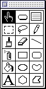

Opening and Closing
This section contains guidelines for handling the initial display of your part (for instance, when its document opens or when your part is first created). The section also notes the situations--typically on the opening of a document--in which your part-editor name and part kind can appear to the user.Opening and Closing Documents
OpenDoc handles the opening and closing of documents. When the user chooses Open Document from the Document menu or double-clicks the icon of an OpenDoc document (which is the part icon of its root part) from the Finder, OpenDoc opens the document and launches the part editor of the root part. That part then creates and opens the document window, displays itself, and creates frames in which the embedded parts display themselves.When the user chooses Close from the Document menu or clicks the close box of the frontmost window, the frontmost window closes. If this window is the only document window of a document, the document itself closes, all associated part windows must close, and all part editors for that document shut down. If this window is a part window, the window closes; however, there is no change to the part in the source document, and the document stays open.
When the user first opens a document and your part is the root part, your part editor should display as much of your part's content as possible. The default location for opening a document window is the upper-left corner of the screen. When the user closes the document, OpenDoc saves the window's position and restores it when the user next opens the document. See the section "Window Positions" in Macintosh Human Interface Guidelines for specific information about saving and restoring window positions.
Individual parts within an open document can also open themselves into windows from either an icon or frame view type, as described in "Viewing Embedded Parts in Part Windows"
Creating Parts From Tool Palettes
Many conventional applications have long supported multiple kinds of content. For example, bitmapped and object-based graphics applications typically support text in addition to graphic content.Under the OpenDoc part metaphor, text and graphics are typically embedded as separate parts, most commonly through dropping or pasting actions involving stationery or other existing parts. However, just as some conventional graphics applications provide a text tool in their tool palettes, your OpenDoc parts can allow embedding of different data types through tool selection from a palette or similar device.
If you decide that it is appropriate to allow embedding through a palette, here is how you might present it to the user. The palette shown in Figure 13-1 is taken from HyperCard. It shows several tools--the Button tool and the Text tool, for example--that, under OpenDoc, could be used to create different kinds of embedded parts.
Figure 13-1 A palette with tools for creating content and for embedding parts

When several part editors exist in a category, make sure your palette tools specify parts by part category or kind (such as "SurfWriter:Kind:Styled Text") rather than by individual editor (such as "SurfWriter 3.01 Pro"). By creating a part by kind, you ensure that a user's preferences for default editors are respected, as set in the Set Editor dialog box (see "Binding to Default Editor for Kind").When the user selects a tool from your palette, you may want to offer various levels of functionality. In the case of a text tool, for example, the user might want either plain text or styled text, depending upon the context. To offer that flexibility, you can provide different images in the palette to indicate which categories of tools are available.
At the same time, you do not want the palette to become too complex, and you cannot know in advance what editors will be available. For example, in the Styled Text category, there might be editors available for "SurfWriter Styled Text", "AcmeWare Text", and "AcmeWare International Text". You should not create a separate button control for each available kind, but should instead use the default editor specified for that category by the user. See the section "Binding to Default Editor for Category"
Displaying Your Editor Name and Part Kind
Startup is a natural time to display your part editor's name and other information--such as copyright information and disclaimers--in a splash screen. Be prudent in displaying splash screens, however. It can be over-
whelming to users, especially when multiple parts in an opening document display splash screens at the same time. OpenDoc can start up and shut down your part editor several times during the course of a user session, not just at the opening and closing of its document. You shouldn't disrupt the user by displaying a splash screen every time your part editor starts running. In general, your part editor should display its splash screen either upon installation or upon its first use to edit a part. After that, make the splash screen available through the About Editor command in the Apple menu.When you display your splash screen, make it as unobtrusive as possible. You might display it in a modeless window, you should make it as small as possible, you should display it for only a short time (perhaps 5 seconds or less), and you should make it disappear automatically--without requiring the user to dismiss it.
Your part-editor name can appear in several other places besides a splash screen and through the About Editor command in the Apple menu. These locations are
The only other times when users must be aware of a part editor are when they install or replace one. See Appendix C, "Installing OpenDoc Software and Parts," for instructions on where to install your part editor.
- Editor Preferences command in the Edit menu
- Editor Help command in the Guide menu
- Editor pop-up menu in the Part Info dialog box (allow the user to select a different editor for a part)
- Editor Setup dialog box and Set Editor dialog box (allow the user to set a default editor for parts of a given kind or category)
The part kind of your part also appears in the following dialog boxes, in a Kind pop-up menu that allows the user to change the part kind: